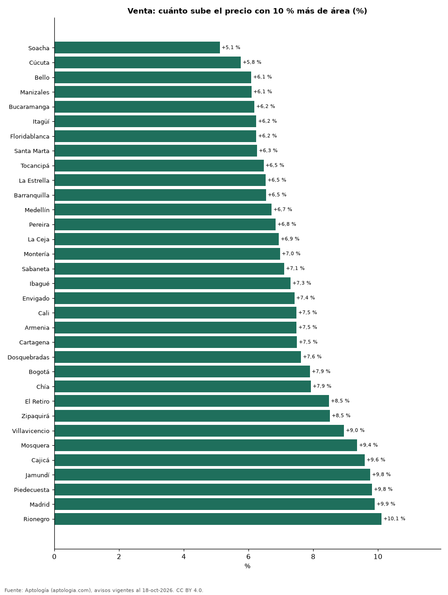

¿Cuánto vale un metro cuadrado extra? Cómo sube el precio con el tamaño del apartamento en 33 ciudades de Colombia (octubre 2026)
Estudio con datos abiertos (CC BY 4.0). Versión original: https://github.com/elbroker/aptologia-datos/tree/main/estudios/cuanto-vale-un-metro-cuadrado-extra-ciudades-colombia-2026 · DOI: 10.5281/zenodo.23481475
En Colombia, dentro del mismo estrato, un apartamento en venta 10 % más grande se pide +7,6 % más caro. En Bogotá un m² extra vale unos 6,07 millones de pesos, frente a 7,25 millones de pesos del m² mediano. El efecto del tamaño es más débil en Soacha (+5,1 % por 10 % de área) y más fuerte en Rionegro (+10,1 %).
Resumen: estimamos la relación entre precio y área de 117.698 apartamentos en venta y 64.312 en arriendo en 33 ciudades, con el estrato fijo.
Actualizado: 18 de octubre de 2026 (datos del 18 de octubre de 2026) · Próxima actualización: mensual.

Resumen
| Indicador | Valor |
|---|---|
| +10 % de área (venta, país) | +7,6 % |
| 1 m² extra en Bogotá | 6,07 millones de pesos |
| Efecto más débil | Soacha: +5,1 % |
| Efecto más fuerte | Rionegro: +10,1 % |
Cuánto sube el precio con el área, por ciudad
| Ciudad | Venta: +10 % de área sube el precio | Valor de 1 m² extra (venta) | Precio mediano del m² | Arriendo: +10 % de área | Avisos (venta / arriendo) |
|---|---|---|---|---|---|
| Soacha | +5,1 % | 1,68 millones de pesos | 3,39 millones de pesos | — | 543 / 144 |
| Cúcuta | +5,8 % | 1,96 millones de pesos | 3,55 millones de pesos | +3,6 % | 664 / 392 |
| Bello | +6,1 % | 3,44 millones de pesos | 5,44 millones de pesos | +7,4 % | 2.194 / 1.083 |
| Manizales | +6,1 % | 3,58 millones de pesos | 5,65 millones de pesos | +6,8 % | 2.800 / 287 |
| Bucaramanga | +6,2 % | 2,94 millones de pesos | 4,67 millones de pesos | +6,7 % | 2.476 / 429 |
| Itagüí | +6,2 % | 4,39 millones de pesos | 6,75 millones de pesos | +6,2 % | 1.927 / 897 |
| Floridablanca | +6,2 % | 3,25 millones de pesos | 5,16 millones de pesos | +6,0 % | 932 / 363 |
| Santa Marta | +6,3 % | 4,90 millones de pesos | 8,72 millones de pesos | +6,1 % | 3.791 / 675 |
| Tocancipá | +6,5 % | 2,36 millones de pesos | 3,62 millones de pesos | — | 240 / 98 |
| La Estrella | +6,5 % | 4,53 millones de pesos | 6,47 millones de pesos | +7,4 % | 484 / 487 |
| Barranquilla | +6,5 % | 2,96 millones de pesos | 4,53 millones de pesos | +6,1 % | 7.646 / 3.805 |
| Medellín | +6,7 % | 5,21 millones de pesos | 7,50 millones de pesos | +6,5 % | 19.694 / 20.159 |
| Pereira | +6,8 % | 3,77 millones de pesos | 5,50 millones de pesos | +6,5 % | 4.380 / 1.549 |
| La Ceja | +6,9 % | 4,51 millones de pesos | 5,92 millones de pesos | +7,5 % | 272 / 350 |
| Montería | +7,0 % | 2,44 millones de pesos | 3,72 millones de pesos | — | 321 / 56 |
| Sabaneta | +7,1 % | 5,28 millones de pesos | 7,12 millones de pesos | +6,0 % | 4.174 / 3.856 |
| Ibagué | +7,3 % | 3,21 millones de pesos | 4,23 millones de pesos | +5,9 % | 1.253 / 262 |
| Envigado | +7,4 % | 6,35 millones de pesos | 8,44 millones de pesos | +6,8 % | 5.502 / 7.279 |
| Cali | +7,5 % | 3,76 millones de pesos | 4,65 millones de pesos | +6,4 % | 9.363 / 1.557 |
| Armenia | +7,5 % | 4,11 millones de pesos | 5,33 millones de pesos | +7,4 % | 2.301 / 336 |
| Cartagena | +7,5 % | 6,07 millones de pesos | 7,88 millones de pesos | +6,9 % | 5.940 / 2.027 |
| Dosquebradas | +7,6 % | 3,52 millones de pesos | 4,65 millones de pesos | — | 594 / 68 |
| Bogotá | +7,9 % | 6,07 millones de pesos | 7,25 millones de pesos | +7,1 % | 30.678 / 12.711 |
| Chía | +7,9 % | 4,61 millones de pesos | 5,53 millones de pesos | +6,0 % | 1.475 / 482 |
| El Retiro | +8,5 % | 8,22 millones de pesos | 9,31 millones de pesos | +8,0 % | 558 / 541 |
| Zipaquirá | +8,5 % | 3,63 millones de pesos | 4,37 millones de pesos | — | 802 / 174 |
| Villavicencio | +9,0 % | 3,87 millones de pesos | 4,20 millones de pesos | — | 361 / 74 |
| Mosquera | +9,4 % | 4,77 millones de pesos | 4,93 millones de pesos | — | 799 / 167 |
| Cajicá | +9,6 % | 5,35 millones de pesos | 5,69 millones de pesos | +9,9 % | 1.475 / 382 |
| Jamundí | +9,8 % | 3,31 millones de pesos | 3,58 millones de pesos | — | 471 / 116 |
| Piedecuesta | +9,8 % | 3,60 millones de pesos | 3,67 millones de pesos | — | 255 / 65 |
| Madrid | +9,9 % | 3,47 millones de pesos | 3,59 millones de pesos | +3,4 % | 449 / 270 |
| Rionegro | +10,1 % | 7,96 millones de pesos | 7,44 millones de pesos | +10,9 % | 2.884 / 3.171 |
Elasticidad precio-área estimada por regresión log-log con efectos fijos de estrato (apartamentos de 25 a 400 m²); el valor del m² extra es la elasticidad × precio mediano ÷ área mediana.
Preguntas frecuentes
¿Cuánto vale un metro cuadrado adicional en un apartamento? En Bogotá, unos 6,07 millones de pesos en venta, frente a 7,25 millones de pesos del m² mediano.
¿El m² de los apartamentos grandes es más barato? Si la elasticidad es menor que 1, sí: cocina, baños y zonas comunes pesan igual en un apartamento pequeño que en uno grande, y los metros adicionales valen menos que el promedio.
Metodología
- Fuente: exportes nocturnos de la base de datos de Aptología (aptologia.com) del 18 de octubre de 2026: avisos vigentes de vivienda en portales inmobiliarios de 13 países, recogidos por Aptología y vistos en línea entre el 11 y el 18 de octubre de 2026. Corte: 18 de octubre de 2026.
- Depuración: se eliminan duplicados exactos (misma ciudad, zona, tipo, precio, moneda, área, habitaciones y baños) y los precios fuera del percentil 1–99 de cada país, operación, moneda y tipo; el precio por m² usa solo avisos con área declarada entre 12 y 2.000 m² y también se recorta al P1–P99.
- Qué se mide: precios pedidos (publicados), no precios de cierre. En arriendo, el canon mensual sin administración, gastos comunes ni condominio.
- Muestra mínima: cada cifra publicada se apoya en al menos 30 avisos; las celdas con menos se omiten.
- Colombia: Precios en pesos colombianos, sin conversión de moneda.
- Modelo: log(precio) = b·log(área) + efectos de estrato, por ciudad y operación, con 200 avisos o más; b es la elasticidad (1 = proporcional). +10 % de área equivale a 1,1^b − 1. No controla barrio ni antigüedad.
- Limitaciones: la cobertura depende de los portales que recorre Aptología en cada país y es mayor en las ciudades grandes y en los segmentos medio-alto y alto; el área es la que declara el aviso, sin verificar; los nombres de zona vienen de los portales.
- Privacidad: solo se publican agregados; no se publica ningún dato personal, enlace a avisos ni nombre de anunciante.
- Datos abiertos: datos.csv, licencia CC BY 4.0.
Cómo citar
Pinzón Pineda, D. M. (2026). ¿Cuánto vale un metro cuadrado extra? Cómo sube el precio con el tamaño del apartamento en 33 ciudades de Colombia (octubre 2026). Aptología (aptologia.com). https://github.com/elbroker/aptologia-datos/tree/main/estudios/cuanto-vale-un-metro-cuadrado-extra-ciudades-colombia-2026. Datos: datos.csv, licencia CC BY 4.0.